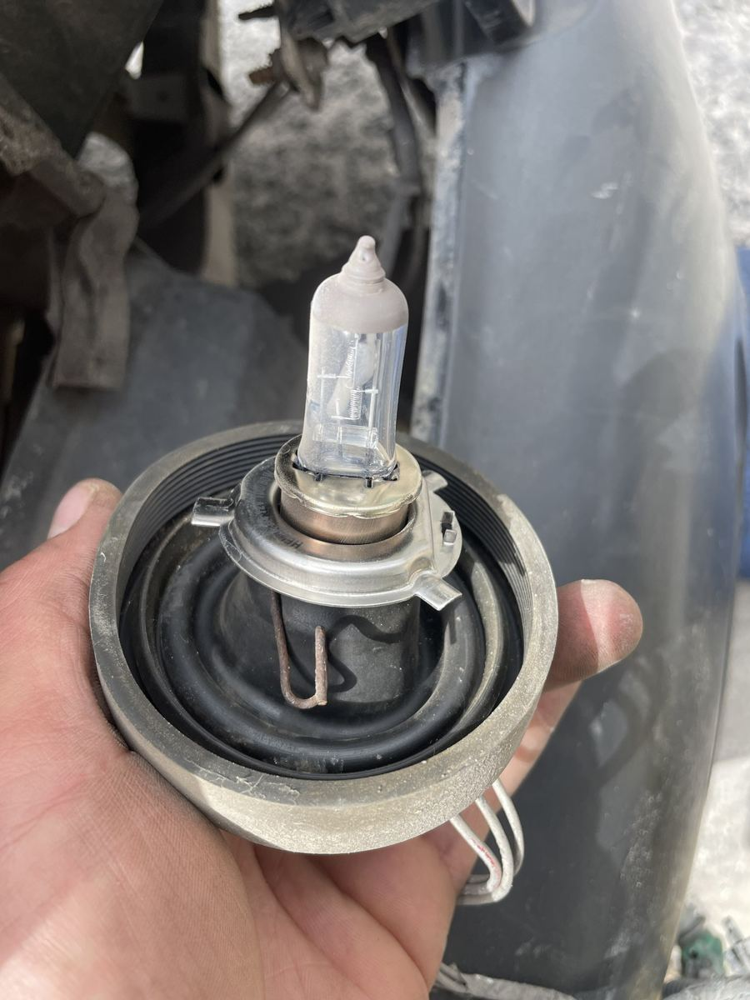
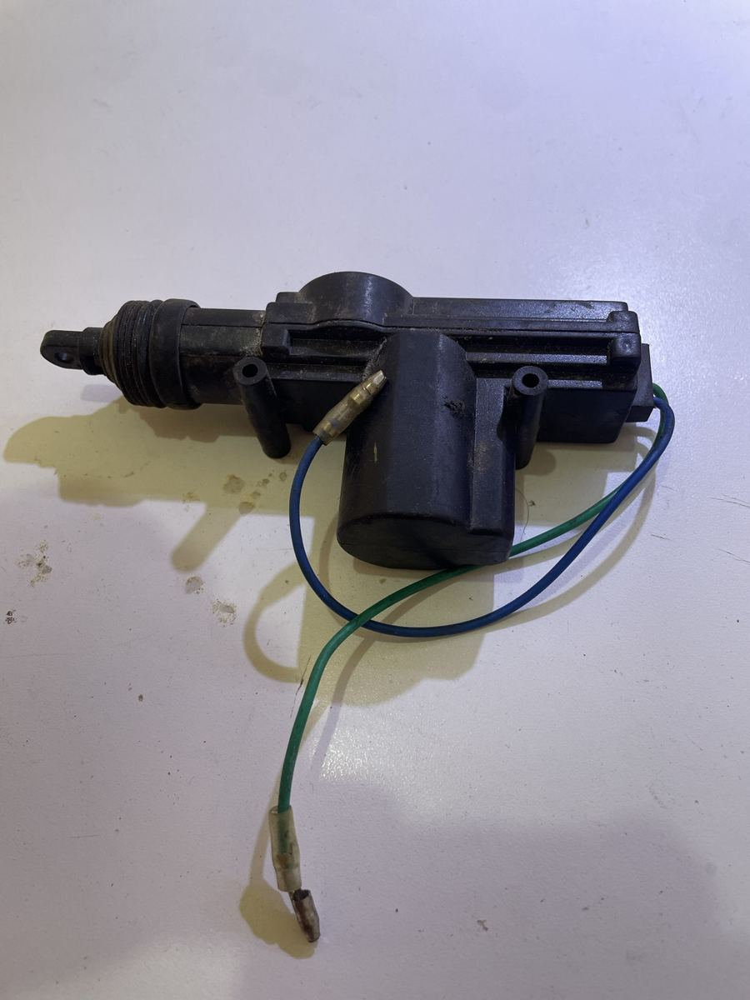

Diagnóstico eléctrico
Localizamos la falla con multímetro antes de cambiar piezas.
// ELECTRO AUTO
Fallas eléctricas, luces y accesorios de tu vehículo, revisados con instrumentos.
// SERVICIOS
Localizamos la falla con multímetro antes de cambiar piezas.
Cables dañados, falsos contactos y empalmes mal hechos.
Direccionales, frenos, faros y barras LED.
Alimentación y conexión correcta de equipos de sonido.
Instalación limpia de cámaras y accesorios eléctricos.
Revisión de voltaje, tierras y protección por fusibles.
// GALERÍA

